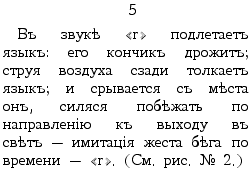
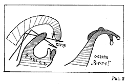
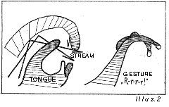
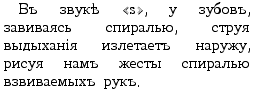
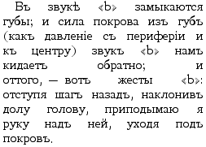
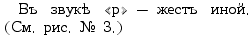
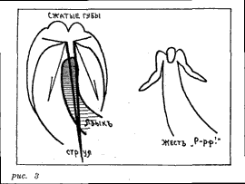
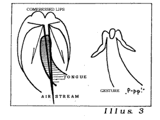
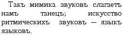

Glossolalia (Section 5)

The tongue flies up for the sound "r": its tip shudders; a stream of air pushes the tongue from the back; and it tears away from its place, trying to flee in the direction of the exit into the light -- an imitation of the gesture of flight through time -- this is "r." (See illus. #2)



For the sound "s", at the teeth, a stream of exhalation, twirling in a spiral, flies outwards, drawing for us gestures with a spiral of upraised arms.

For the sound "b" the lips are drawn closed; and the force of this covering from the lips (like the pressure from the periphery to the center) tosses the sound "b" back at us; and from this, -- come the gestures for "b": taking one step backwards, my head bent down, I raise an arm above the head, coming out from under the covering.

For the sound "p" -- there is another gesture. (See illus. #3)



In this way the mimicry of sounds composes for us a dance; the art of rhythmic sounds is -- lingua linguarum.